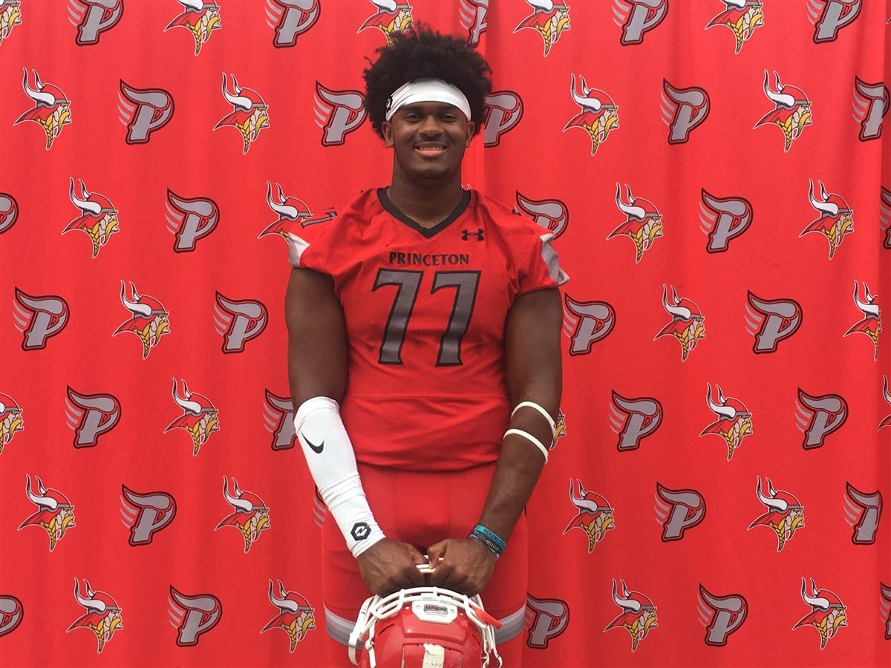
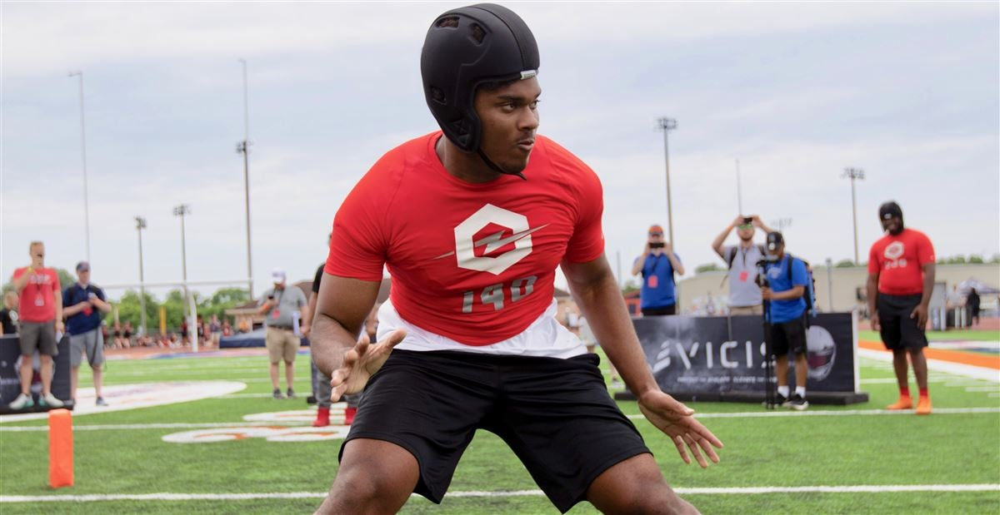
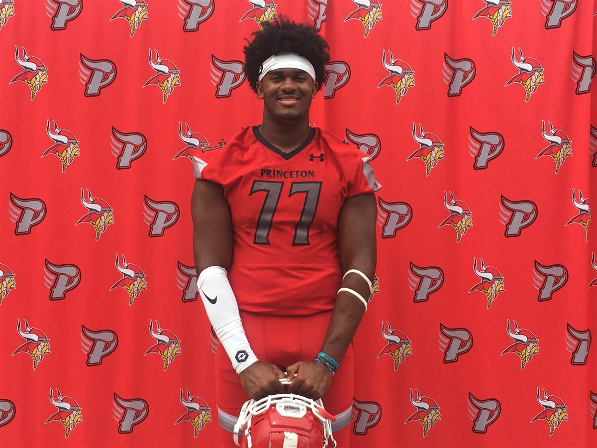
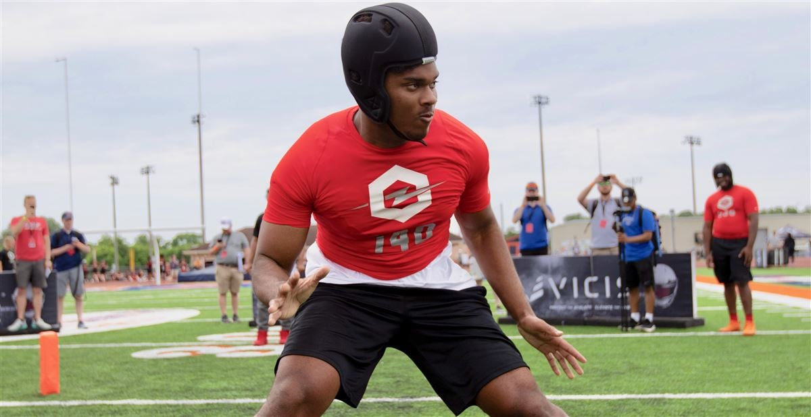

Paris Johnson Jr.
 


Attends Princeton High School in Cincinnati, Ohio
⭐⭐⭐⭐⭐
#1 Nationally ranked OT / #7 Overall
6-7 290 Lbs
Being 6-7 290Lbs as an Offensive Tackle makes him very fast as it shows with his "NFL-type Numbers" at his combine with 5.07 40 yard-dash, 4.53 shuttle, and a 32.5 vertical. He is compared to Andrew Whitworth (247 Sports). It's also a nightmare to line up against him because while at 290 pounds, let's just say Paris knows how to throw his body around. He is a human Pancake Maker.
Paris is a Pure Beast
Committed to The Ohio State Unversity and officially a Buckeye.